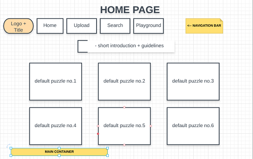
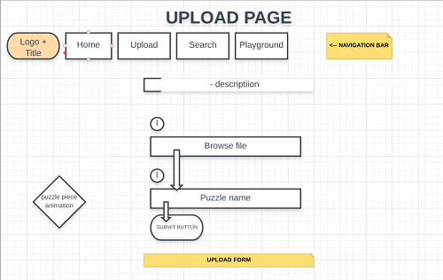
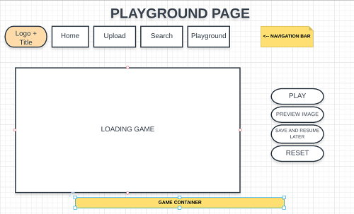

Abstract:
A jigsaw puzzle is a tiling puzzle that requires the assembly of often oddly shaped interlocking and tessellating pieces. Each piece usually has a small part of a picture on it; when complete, a jigsaw puzzle produces a complete picture.
Project description / Motivation
JIGR is a web application designed to solve puzzles proposed by the program or defined by users. Each player is
able to select - either locally or remotely via a URL - an image (in PNG and JPEG formats) that will be cropped at runtime into fragments as complicated as possible using rules
based on generative grammars (rectangular divisions being excluded). The pieces are mixed and the shifts/swings are performed via drag & drop operations. Once a fragment is moved near or almost near to its correct piece, the application provides support for snap placement
in the right area. The current status of each puzzle can be saved locally with the possibility of subsequent restoration.
Used technologies
JavaScript
We have created the application's interface using basic HTML5 and CSS basics, but javascript represents the core of the project. As technology, JavaScript® (often shortened to JS) is a lightweight, interpreted, object-oriented language with first-class functions, and is best known as the scripting language for Web pages, but it's used in many non-browser environments as well. It is a prototype-based, multi-paradigm scripting language that is dynamic, and supports object-oriented, imperative, and functional programming styles. JavaScript runs on the client side of the web, which can be used to design / program how the web pages behave on the occurrence of an event. JavaScript is an easy to learn and also powerful scripting language, widely used for controlling web page behaviour.
Application Architecture
Front-end
Built with CSS and HTML, application's interface has four pages, the third one being almost the same as the home page.
  Back-end
Interaction with users
- Players are welcomed by the home page, where it shows them the option of choosing a default puzzle and redirect them to Playground or go to the next page, 'Upload' to make a puzzle with their own favourite image.
- Second page has a simple form for upload that also takes the users to Playground page once the picture is submitted.
- On Search tab, users can scroll through all puzzles or search for a specific one.
- Playground displays the game, having an easy menu on the right side consisting of below options:
- Play - to start the game
- Preview image - to see again the picture that needs to be assembled as orientation for solving
- Save and resume later
- Reset - to its initial game state
The idea behind the code
After uploading a picture or choosing one by default, the first thing the game's algorithm does
is saving image proprieties like width and height into two variables that will be used when
setting the configuration of the puzzle together with number and width of tiles wanted.
Using this set of data, we create the pieces of the puzzle as in a array to simplify the work
that will follow. Next step is dividing the picture into shapes. Each shape has a mask that creates the edges of a tile
and by using a raster we assign to it a specific part of the initial picture. In the end, the initial array will consist
all of puzzle pieces.
The tiles will display each time in a random way and each two will have a space between them in order for them to be easy
to observe. At the end, the function called "checkTiles" checkes each tile to see if it has been placed on the its initial
position and if the resulted array it's in order.
Anytime, players can press on "Preview image" that will display the initial puzzle image in order to help them resolve it.
Following function switches between puzzle image and puzzle itself.
var canvas = document.getElementById("canvas");
var puzzle_test = document.getElementById("puzzle-image");
function preview () {
if ( canvas.style.display === 'none' ) {
canvas.style.display = '';
puzzle_test.style.display = 'none';
}
else { canvas.style.display = 'none';
puzzle_test.style.display = '';
}
}
Effective team work with GitHub
GitHub Inc. is a web-based hosting service for version control using Git. It is mostly used for computer code. It offers all of the distributed version control and source code management (SCM) functionality of Git as well as adding its own features. It provides access control and several collaboration features such as bug tracking, feature requests, task management, and wikis for every project.
We chose to work with github mainly because it's easy and quick to sync when using desktop version plus, we had the option to track our progress and divide tasks in order to be effective as a team.